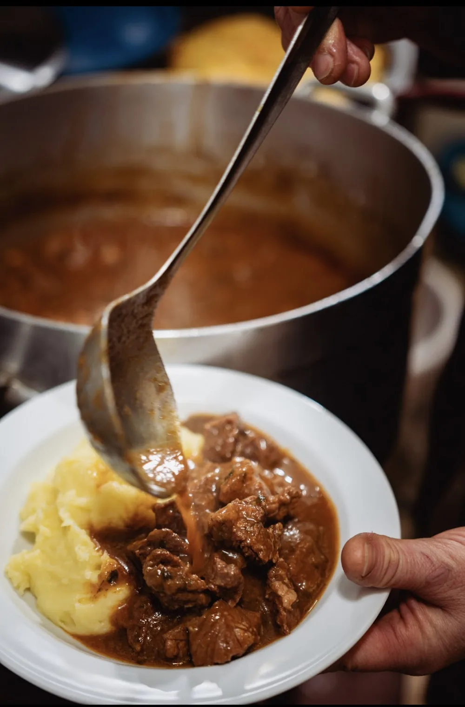

Gdje smo
Konoba u kali
Konoba u kali
starog Šibenika
Marenda stoji na križanju ulica Nove crkve i Bonina iz Milana, u pješačkoj jezgri starog Šibenika. Stolovi su vani u kali, u hladu kamenih kuća. Katedrala sv. Jakova je 300 m odavde, oko 4 minute hoda.
Autom se dolazi do Javne garaže Poljana, 200 m i tri minute hoda od konobe. U samoj jezgri parkirno se mjesto teško nalazi, pa je garaža najsigurnija računica. Prostor nasuprot konobe druga je sala, pogodna za poslovne ručkove, domjenke i proslave.
Dobrodošli za naš stol.